定式实战判雷图例（11、121、1221定式）
游戏说明
本文中统一的标志：红点必定是雷，绿点必定不是雷。
图例包含的只是实战中的一小部分，需要理解后在实战中活用。
一、基本定式
①11基本定式形态较多，故举例：
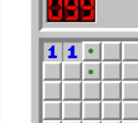
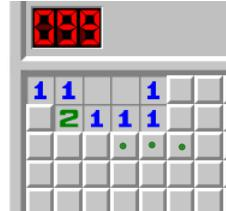
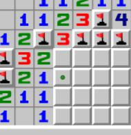
②其他定式请参考基本定式一文。
二、定式变形
定式变形，是一个定式不以最基本的形式出现的情形。有时一些数字旁会有已确定的雷影响，此时需要先将数字减去周围已确定的雷数，得出真实数字，再运用定式。
①11定式变式
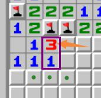
橙色箭头所指的3，周围已有2个雷通过其他方式判出，因此真实数字为1，可以使用11定式。
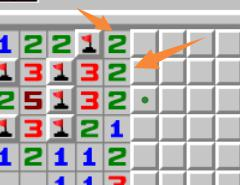
橙色箭头所指的两个2，周围已有1个雷通过其他方式判出，因此真实数字均为1，可以使用11定式。
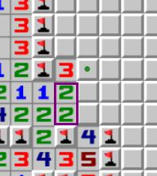
方框内两个2实为11。
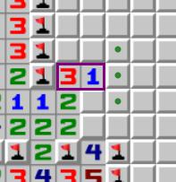
方框内的3减去2为1。
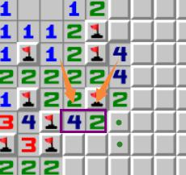
方框内的4、2变为11。
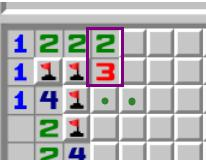
2、3变为11。
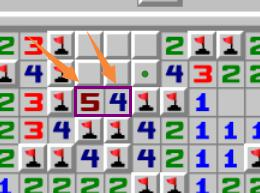
5、4变为11。
②121定式变式
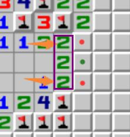
橙色箭头所指的2，周围已有1个雷通过其他方式判出，因此真实数字为1，可以使用121定式。
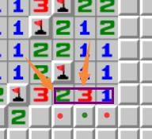
橙色箭头所指的2，周围已有1个雷通过其他方式判出，因此真实数字为1。
橙色箭头所指的3，周围已有1个雷通过其他方式判出，因此真实数字为2
结合右侧的1，可以使用121定式。
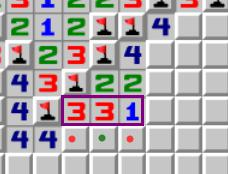
，
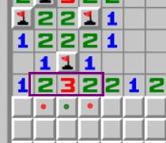
这两个同理。
③1221定式变式
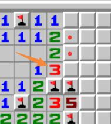
橙色箭头所指的3，周围已有2个雷通过其他方式判出，因此真实数字为1，可以使用1221定式。
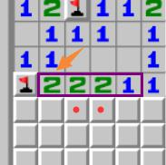
橙色箭头所指的2，周围已有1个雷通过其他方式判出，因此真实数字为1，可以使用1221定式。
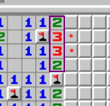
紫框中的2332，每个数字周围都有1个雷通过其他方式判出，因此真实数字为1221。